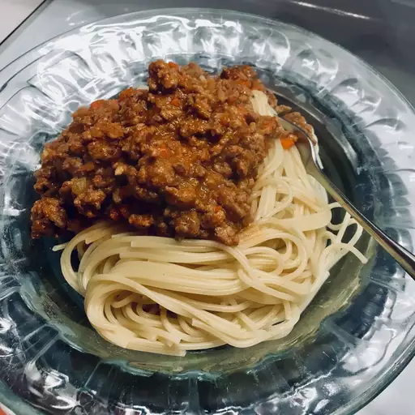

Spaghetti Bolognese

Ragu Bolognese
This is the real deal, an authentic recipe for a meat sauce.
Prep Time:
10 mins
Cook Time:
3 hrs
Total Time:
3 hrs 10 mins
Ingredients:
- ½ cup extra virgin olive oil
- ½ cup butter
- 1 cup minced onion
- ½ cup minced celery
- ¼ cup minced carrot
- 1 pound ground veal
- 1 pound ground pork
- ½ pound ground beef
- ¼ cup finely chopped pancetta bacon
- ½ cup milk
- 2 cups tomato sauce
- 2 cups beef broth
Steps:
- Heat olive oil and butter in a large saucepan over medium heat.
- Saute onion, celery and carrots until soft.
- Add veal, pork, beef and pancetta, and cook until evenly brown, 15 to 20 minutes.
- Pour in milk, and cook until liquid has evaporated, about 15 minutes.
- Stir in tomato sauce and beef broth. Cover, and simmer 2 1/2 hours.
Back to main page